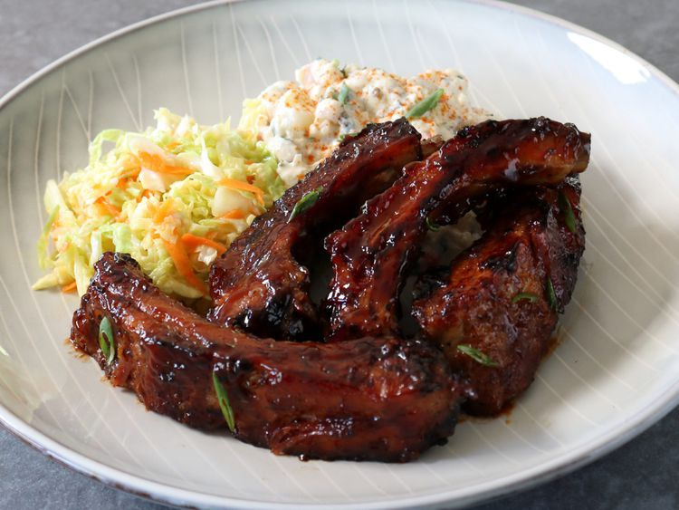

Pork Ribs Recipe

Pork ribs are a popular and savory dish made from racks of pork baby back
ribs. The ribs are typically seasoned with a flavorful dry rub, which may
include ingredients like brown sugar, chili powder, paprika, cumin, and
garlic powder. They are then slow-cooked in the oven at a low temperature,
allowing the meat to become tender and flavorful. After baking, the ribs
are often brushed with barbecue sauce and may be broiled for a caramelized
finish. The end result is succulent and juicy pork ribs with a delicious
combination of smoky, sweet, and savory flavors. This dish is a favorite
at barbecues and gatherings, enjoyed for its finger-licking goodness.
Ingredients For The Ribs
- 2 racks of pork baby back ribs
- Salt and black pepper to taste
- 1 tablespoon smoked paprika
- 1 tablespoon garlic powder
- 1 tablespoon onion powder
- 1 teaspoon cayenne pepper (adjust to taste)
- 1 cup barbecue sauce
Ingredients For The Dry Rub
- 1/4 cup brown sugar
- 1 tablespoon chili powder
- 1 tablespoon paprika
- 1 tablespoon ground cumin
- 1 tablespoon onion powder
- 1 tablespoon garlic powder
- 1 teaspoon cayenne pepper
- Salt and black pepper to taste
Recipe
- Preheat your oven to 275°F (135°C).
-
On the bone side of the ribs, use a knife to lift and loosen the
membrane, then grip it with a paper towel and pull it off.
-
In a bowl, mix together salt, black pepper, smoked paprika, garlic
powder, onion powder, and cayenne pepper. Rub this mixture all over the
ribs, ensuring they are evenly coated.
-
In a separate bowl, combine brown sugar, chili powder, paprika, cumin,
onion powder, garlic powder, cayenne pepper, salt, and black pepper. Rub
the ribs generously with this dry rub, covering both sides.
-
Individually wrap each rack of ribs tightly in aluminum foil. Place them
on a baking sheet and bake in the preheated oven for 2.5 to 3 hours, or
until the meat is tender and almost falling off the bone.
-
Carefully unwrap the ribs and brush them with your favorite barbecue
sauce.
-
If you prefer a caramelized crust, place the sauced ribs under the
broiler for a few minutes until the sauce is slightly caramelized. Watch
closely to avoid burning
-
Allow the ribs to rest for a few minutes before slicing between the
bones. Serve with extra barbecue sauce on the side.